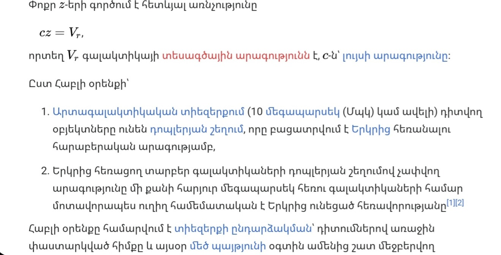
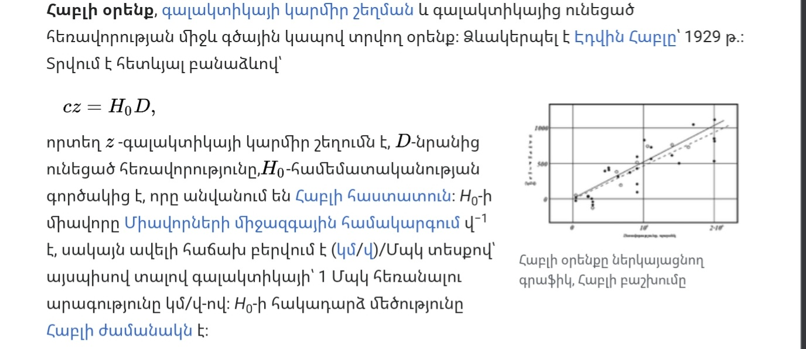
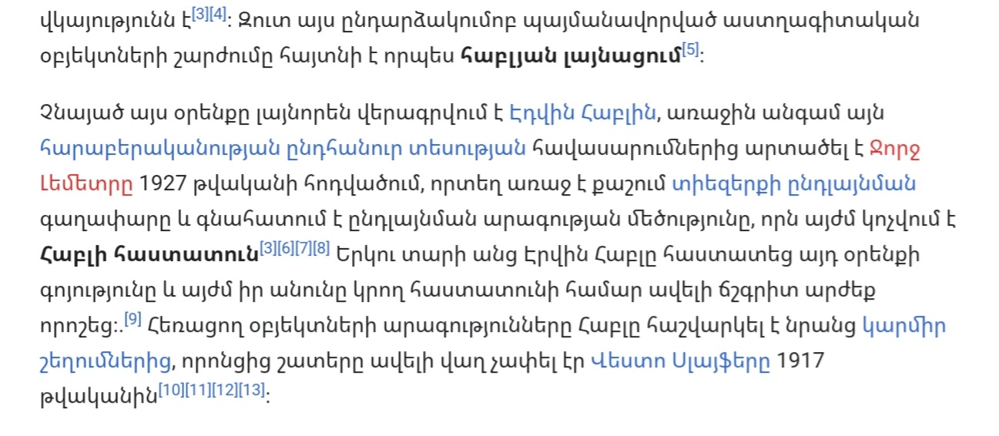
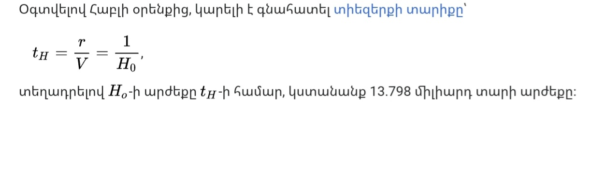
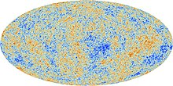
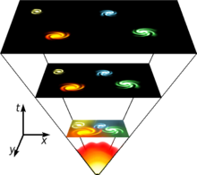

13. Հաբլի օրենքը: Տիեզերքի առաջացման Մեծ պայթյունի վարկածը
Հաբլի օրենք



Տիեզերքի տարիք

Մեծ պայթյուն
Մեծ պայթյուն, տիեզերքի սկզբնական պայմանների և հետագա զարգացման տիեզերագիտական մոդել, որը հիմնավորվում է ընթացիկ գիտական փաստերի և դիտարկումների ամենահամապարփակ և ճշգրիտ բացատրություներով[1][2]։ Ըստ տիեզերագետների՝ Մեծ պայթյուն եզրն ընդհանրապես անդրադառնում է այն գաղափարին, որ աշխարհը ընդարձակվել է նախնական խիտ և տաք սկզբնական պայմաններից՝ անցյալի որոշ սահմանափակ ժամանակում (ներկայիս հաշվարկներով՝ մոտավորապես 13.7 միլիարդ տարի առաջ[3]), և մինչ օրս էլ շարունակում է ընդլայնվել։

Մեծ պայթյունի տեսությունը զարգացել է աստիճանաբար։ Առաջին անգամ այդ միտքն արտահայտել է բելգիացի հոգևորական և ֆիզիկոս Ջորջ Լեմետրը 1927 թ.։ Տեսական հիմք հանդիսացող հավասարումները ձևակերպել է Ալեքսանդր Ֆրիդմանը 1922 թ.։ Մեծ պայթյունի մոդելը հիմնվում է Ալբերտ Այնշտայնի ընդհանուր հարաբերականության (1916 թ.) վրա՝ ընդունելով, որ տիեզերքը համասեռ է և իզոտրոպ։ 1929 թվականին Էդվին Հաբլը հայտնաբերեց, որ հեռու գալակտիկաների հեռավորությունը համեմատական է իրենց կարմիր շեղմանը։ Ինչպես Լեմետրը առաջարկել էր 1927-ին, այս դիտարկումը օգտագործվեց մատնանշելու, որ բոլոր գալակտիկաներն ու աստղաբույլերը հեռանում են մեզանից, և որքան հեռու է գալակտիկան, այնքան մեծ է հեռանալու արագությունը[4]
